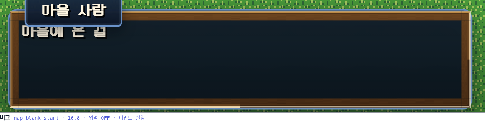
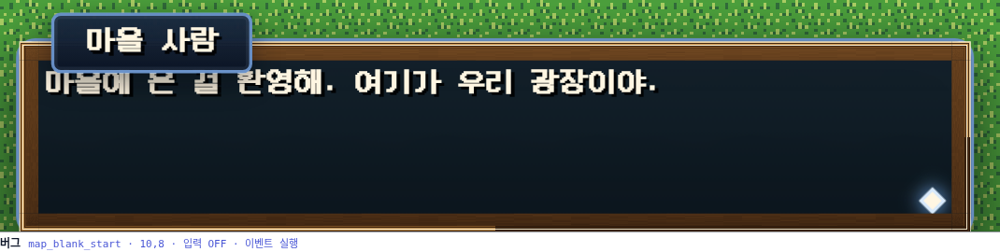
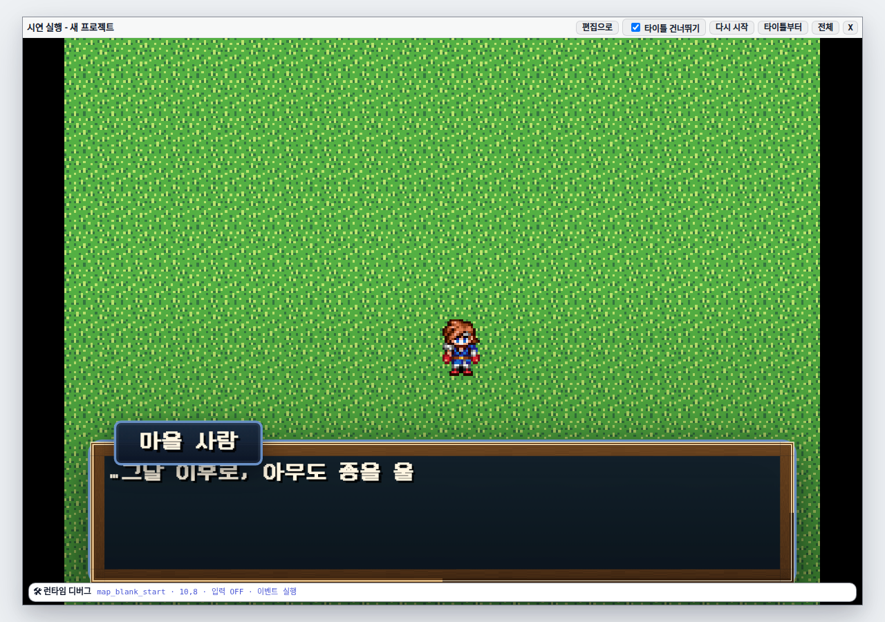
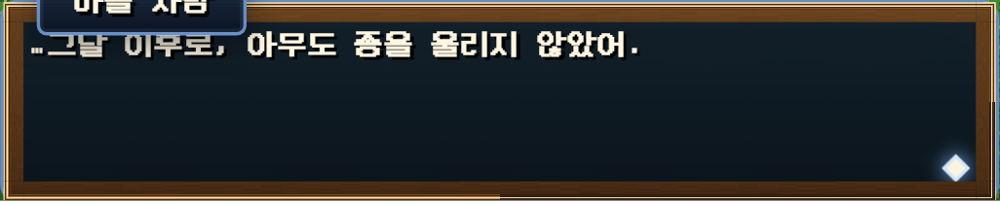
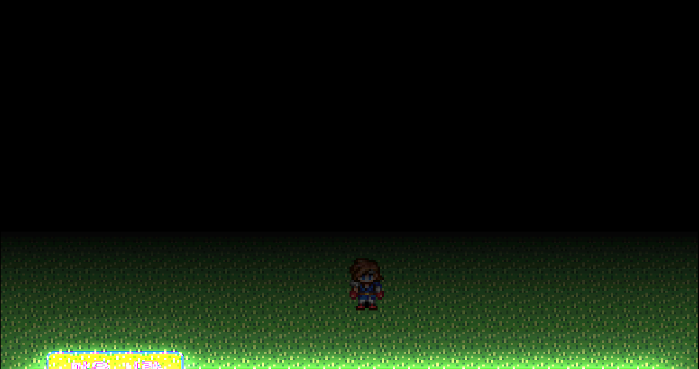
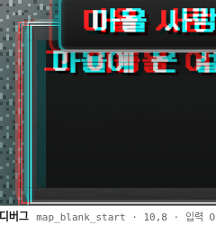
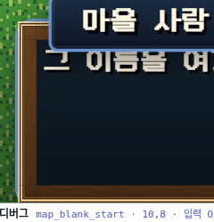
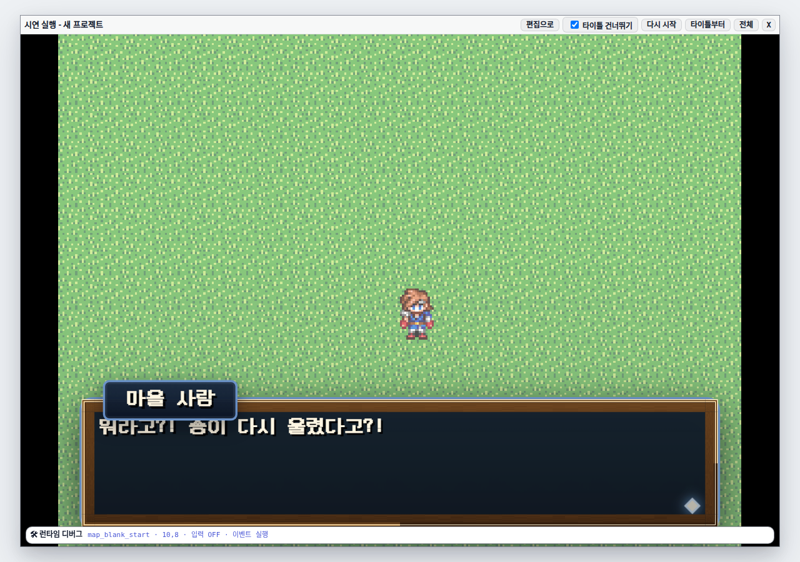
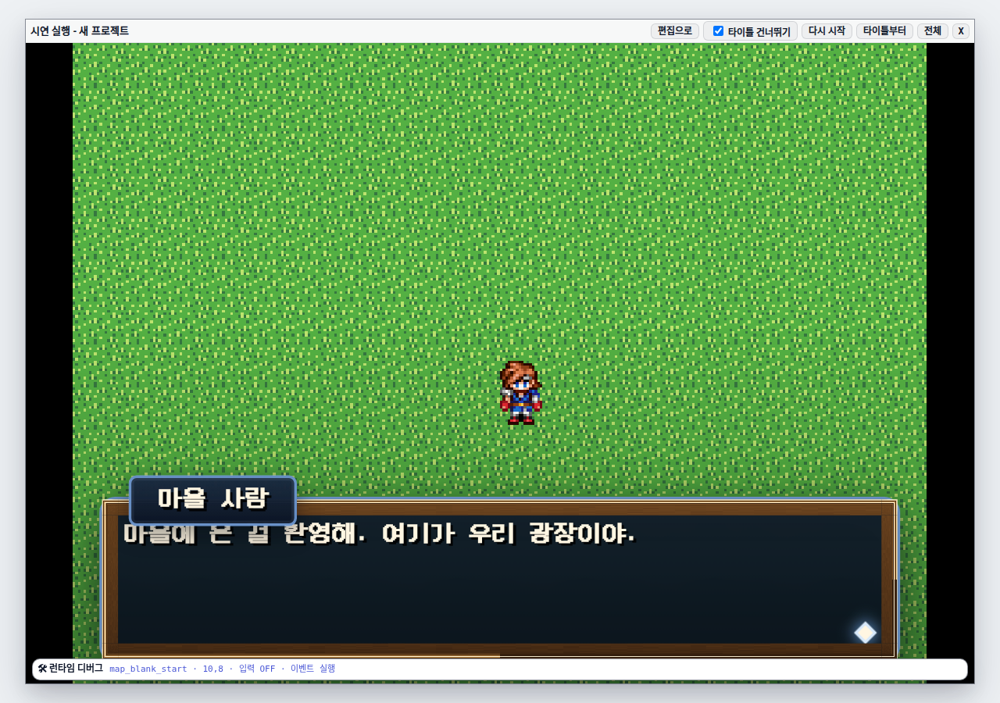

emotion 재해석
게임에서 가장 자주 보는 UI 가 가장 밋밋했다. src/styles/dialogue.css 759줄
전체에서 @keyframes 는 페이지 커서 펄스 하나뿐이고 transition 은
선택지 버튼 하나뿐이었다. 창은 overlay.append(box) 로 즉시 나타나고
cleanup() 이 동기적으로 DOM 을 날려 즉시 사라졌다. 초상화·이름표도 그냥 튀어나왔다.
emotion 필드가 이미 있고 완전히 버려지고 있었다.
src/project/types/events.ts 에 text 커맨드의 emotion? 가
선언돼 있고, 에디터가 segmentedSelect 로 5종(기본/기쁨/슬픔/분노/놀람)을
저작하게 해 주고, 프로젝트에 저장되고, 인터프리터까지 전달된다. 그리고
dialogue.showText() 경계에서 조용히 버려졌다 — DialogueTextRequest 에
필드 자체가 없었다.
그래서 이 필드를 "감정 태그"에서 "말투·연출 프로파일 선택자"로 재해석했다.
값 5종은 그대로 두고 각각에 연출 프로파일을 매핑한다. 저장 형식이 안 바뀌므로
마이그레이션 0, 세이브 호환성 문제 0, 커맨드 계약 파일과 nativeManifest 개수
잠금도 안 건드린다.
emotion 을 떨어뜨리는 코드는
src/project/io/migration.ts 의 migrateCommandV1 하나뿐이고, 이건
emotion 이 존재하지도 않던 ProjectV1 전용 경로다. 커맨드 필드를 걸러내는
직렬화 화이트리스트는 없고, rewriteLegacyDialogue.ts 는 오히려 이 필드를 보존한다.
translateY(8px) scaleY(0.86) opacity(0.35) → 58% 에서 오버슈트
translateY(-3px) scaleY(1.05) → 정착. 170ms.
픽셀 톤과 싸우지 않게 오버슈트는 5% 로 억제했다.


얼린 프레임의 계산된 transform 은 matrix(1, 0, 0, 1.05, 0, -3) 로
읽혔다 — keyframe 의 58% 지점과 정확히 같다. transform-origin: 50% 100% 이라
창이 아래 변에서 자란다.
showText 는 대사 한 줄마다 상자를 새로 만들고, cleanup() 은 마지막
페이지에서 상자를 즉시 파괴한다. 순진하게 붙이면 대사 줄마다 팝업이 재생되고,
퇴장 연출은 아예 재생될 틈이 없다 — hide() 가 불릴 땐 이미 오버레이가
비어 있다.
cleanup() 의 파괴를 지연시키고, 진입 연출은
진입 시점에 오버레이가 비어 있었을 때만 재생하게 했다. 별도 세션 플래그가
필요 없다 — overlay.firstChild 유무가 그대로 세션 경계다. 연속 대사는
advance() → cleanup() → 다음 showText 가 같은 tick,
페인트 전에 일어나므로 예약된 퇴장이 한 프레임도 그려지지 않고 취소된다.
createDialogueUI(host, schedule?) 로 주입 가능해서
(createBattleTransition 과 같은 형태) 신규 생명주기 테스트는 동기 schedule 로
결정적으로 검사한다.


이름표는 40ms 지연 + 150ms 슬라이드·페이드, 초상화는 자기 쪽에서 10px 슬라이드 인.
transform/opacity 만 쓴다 —
has-speaker 의 padding-top 은 줄 수 계산에 직접 들어가므로
레이아웃 속성은 애니메이션하지 않는다.
본문 렌더러를 dialogueTextRenderer.ts 로 떼어내 증분 방식으로 바꿨다. 지금까지는
매 글자마다 clearChildren + 전량 재생성이라 CSS 애니메이션이 매 글자
리셋됐다. 이제 페이지 글자를 모두 span 으로 깔아 두고 is-shown 만
얹으므로, 글자별 등장 연출이 실제로 살아 있고 타이핑 중 리플로도 사라진다(글자가 처음부터
자리를 차지한다).
줄 구조가 흔들릴 걱정은 없다. 페이지네이터가 페이지 세그먼트에 명시 "\n" 을
심고 .body 는 white-space: pre-wrap 이며, 폭 측정은 오프스크린
canvas measureText 라 DOM 구조와 무관하다. 프로파일별 타자 배율은
슬픔 ×1.35, 분노·놀람 ×0.8 이고 \s[n] 명시 지정이 있으면 그쪽이 이긴다.
스크림(디밍/비네트)을 오버레이의 형제로 z-index 38 에 뒀다. 오버레이 자신은
position-top/bottom 에서 높이가 29% 뿐이라 화면을 덮을 수 없다.

같은 두 그림에서 맵이 보이는 좌우 띠의 평균 밝기를 재면 그라디언트가 수치로 나온다.
설계는 to top 으로 바닥 0.28 → 56% 지점에서 0 인데, 무대 높이 788px 기준
56% 는 y ≈ 403 이다. 실측이 y 380 에서 0, y 460 에서 −3.5% 로 설계한 정지점과
맞는다.
| 무대 y | 창 없음 | 스크림 | 차이 |
|---|---|---|---|
| 60 | 115.31 | 115.31 | 0.00% |
| 140 | 114.26 | 114.26 | 0.00% |
| 220 | 115.58 | 115.58 | 0.00% |
| 300 | 114.73 | 114.73 | 0.00% |
| 380 | 114.72 | 114.72 | 0.00% |
| 460 | 113.54 | 109.60 | −3.47% |
| 540 | 115.21 | 106.78 | −7.31% |
| 620 | 113.18 | 96.40 | −14.83% |
| 660 (창 상단 아래) | 115.86 | 88.15 | −23.91% |
| 700 | 116.75 | 82.00 | −29.76% |
3px 논리 변위는 나란히 놓아도 눈으로 안 잡힌다. 정착 프레임을 청록, 흔들린 프레임을 빨강 채널에 넣어 겹치면 어긋남이 보인다.


matrix(1, 0, 0, 1, -3, 0).
left 가 117.24 로 정착값 127.49 보다 10.25 화면 px 왼쪽이다.
--play-scale 이 3.4167 이므로 논리 3px × 3.4167 = 10.25 — 계산이 맞는다.
Phaser 카메라 흔들기는 DOM 대화창에 안 먹으므로 CSS keyframes 로 갔다.

::after opacity 0.612.
emotion 세그먼트를 event-command-text-advanced details 밖으로 올려
상시 노출하고 라벨을 「감정」 → 「말투·연출」 로 바꿨다. 프리뷰 창이 선택된 진입 연출을
재생하는데, 값이 바뀔 때만 재생한다. 본문 입력마다 재생하면 타자마다 창이
튀어 글을 쓸 수 없다.
.dialogue-box 를 요구하는데 프리뷰 창은 .ecp-message-window 라서다.
keyframe 이름은 같은 파일에서 부르지만 감정→keyframe 짝이 어긋나면 제작자가 고른 연출과
프리뷰가 달라진다. test/dialoguePreviewPresentationCss.test.ts 가 두 선택자
집합을 대조해 어긋남을 잠근다.
TS 가 CSS 변수로 심고 CSS 가 var() 로 읽는다.
battleTransition.ts 가 상수를 TS 와 CSS 에 이중으로 적어 이미 어긋난
값(close 260 vs 190)을 갖고 있어서, 그 실수를 반복하지 않으려고 진실을 한 곳으로 몰았다.
| 프레임 | emotion | phase | animation | transform | left | height |
|---|---|---|---|---|---|---|
| 진입 58% | neutral | enter | dialogue-box-enter 0.17s | matrix(1,0,0,1.05,0,−3) | 127.49 | 220.97 |
| 정착 | neutral | shown | none | none | 127.49 | 210.45 |
| 타자 (슬픔) | sad | shown | none | none | 127.49 | 210.45 |
| 흔들림 22% | angry | shown | dialogue-box-shake 0.12s | matrix(1,0,0,1,−3,0) | 117.24 | 210.45 |
| 플래시 18% | surprised | shown | 스크림 ::after 0.612 | none | 127.49 | 210.45 |
| 항목 | 결과 | 비고 |
|---|---|---|
| 대화 집중 게이트 | 63 / 63 | dialoguePresentation · dialoguePresentationCss ·
dialogueTextRenderer · dialogue ·
dialoguePreviewPresentationCss · dialoguePresentationAuthoring ·
playerRuntimeCss |
| 에디터 인접 | 51 / 51 | 커맨드 본문·프리뷰 경로 |
tsc -p tsconfig.app.json | 종료 0 | 무출력 |
| CSS 예산 | 회귀 0 | cssFileCount 262 유지, hex·!important 증가 0 |
| CSS 그래프 | 신규 0 | --save-baseline 을 쓰지 않았다 — 래칫을 영구히 푼다 |
qa:runtime --scenario dialogue | 통과 | 3/3 비트, 런타임 오류 0 |
| 타자 타이밍 기대값 | 한 줄도 안 바뀜 | test/dialogue.test.ts 의 24ms·159ms 단위. 진입 연출을 타이핑과 동시에
돌리고 startPage(0) 시점을 안 건드렸다는 증거다 |
지연 제거 때문에 손댄 기존 단정은 "키를 누른 직후 DOM 이 비어 있다"를 재던 2곳뿐이다
(test/dialogue.test.ts 의 퇴장 대기 한 줄, runtimePictureStacking 의
상자 소멸 대기).
dialogue-fits-box, dialogue-modern-skin,
dialogue-keeps-view, oprn-dialogue-choice-ux-cert,
npc-dialogue-reacts 가 빨갛다. 짐작하지 않고 병합 기점 8c025196 에
워크트리를 따로 만들어 같은 스펙을 돌렸다 — 오류 줄 집합이 바이트 단위로
동일하다(dialogue-fits-box 56행, dialogue-modern-skin 25행,
dialogue-keeps-view 32행, 이벤트 목록 행 클릭 타임아웃). 이 브랜치가 만든
실패가 아니라, 위키가 구조적으로 불안정하다고 적어 둔 마커 클릭 경로다.
commandBodyCore.ts 는 main 에서 이미 1142줄로 1000 상한을 넘어 있고
예외 목록에도 없다. 이 PR 은 17줄 더해 1159 가 되며 게이트 상태는 그대로다. 신규 로직은
새 TS 모듈 2개로 뺐고(dialoguePresentation.ts 177줄,
dialogueTextRenderer.ts 129줄), dialogue.ts 는 945줄로 하드 상한
아래에 머문다.
emotion 재사용은 스키마·마이그레이션·저작 UI 비용을 0 으로 만드는 대신 감정과
모션을 한 필드에 묶는다. 기존 프로젝트에서 이 필드를 장식으로 넣어 둔 대사에 이제 모션이
붙는다 — 필드가 드디어 일하는 것이라 의도된 결과다. 문제가 되면 프로파일 테이블만 손봐
neutral 로 눌러 두면 되고 나머지 층은 그대로 살아 있다. 세부 파라미터 오버라이드가
필요해지면 text 커맨드에 optional 필드를 더하면 되고, 그때도 이 구조는 남는다.
prefers-reduced-motion 은 프로파일 주입과 CSS 미디어쿼리 양쪽에 있다.
src/styles/runtime/juice.css 에 문서화된 원칙대로 움직임만 끄고 의미
신호는 남긴다 — transform·흔들림·글자별 이동은 없애고 60ms opacity 페이드와
스크림과 타자 배율은 유지한다. 감정별 animation-name 규칙이 (0,3,0) 이라
안전망 셀렉터에 [data-dialogue-emotion] 을 함께 붙여야 특이도에서 이긴다.
qa:runtime 을 되살리는 과정에서 워크트리 node_modules 가
server.fs.allow 를 뚫는 형태를 실측했다. 디렉터리 자체는 실물이고 패키지가
하나씩 메인 레포로 링크된 형태라 realpathSync("./node_modules") 가 자기 자신으로
풀려 아무것도 넓히지 못하고, /@fs/…/phaser.min.js 가 403 났다. 게임이 통째로
안 떠서 시나리오 전체가 "런타임 훅 없음"으로 실패하는데, 원인 문구는
outside of Vite serving allow list 한 줄뿐이라 찾기 어렵다. 링크
대상의 부모까지 넓히도록 고쳤다(@scope 는 한 단계 더 들어간다).
같이 확정한 것: 스크림이 크롭 inset 을 따라가는지는 "따라갈 크롭이 없다"가
답이다. --play-crop-* 는 항상 0 이고
(calculatePlaySurfaceScale 이 정수 모드에서 Math.floor 를 돌려
무대가 뷰포트를 넘지 않는다), 레터박스는 .play-stage 밖이다. 스크림 rect 가
무대 rect 와 정확히 같음을 실측했다.